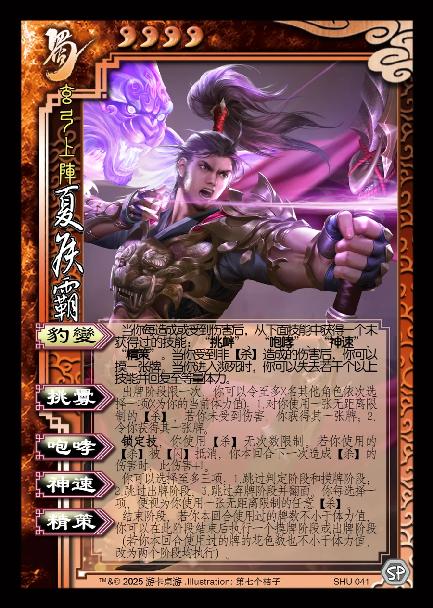

点击卡面查看大图
蜀
夏侯霸
♥4玄弓上阵
豹变
当你每造成或受到伤害后，从下面技能中获得一个未获得过的技能：“挑衅”、“咆哮”、“神速”、“精策”。当你受到非【杀】造成的伤害后，你可以摸一张牌。当你进入濒死时，你可以失去若干个以上技能并回复至等量体力。
挑衅衍生
出牌阶段限一次，你可以令至多X名其他角色依次选择一项(X为你的当前体力值)：1.对你使用一张无距离限制的【杀】，若你未受到伤害，你获得其一张牌；2.令你获得其一张牌。
咆哮锁定技衍生
锁定技，你使用【杀】无次数限制。若你使用的【杀】被【闪】抵消，你本回合下一次造成【杀】的伤害时，此伤害+1。
神速衍生
你可以选择至多三项：1.跳过判定阶段和摸牌阶段；2.跳过出牌阶段；3.跳过弃牌阶段并翻面。你每选择一项，便视为你使用一张无距离限制的任意【杀】。
精策衍生
结束阶段，若你本回合使用过的牌数不小于体力值，你可以在此阶段结束后执行一个摸牌阶段或出牌阶段（若你本回合使用过的牌的花色数也不小于体力值，改为两个阶段均执行）。